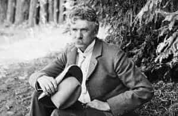
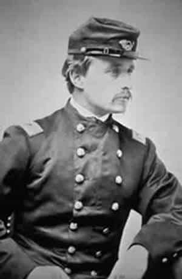

Quintus can be found at qcurtius.com. He is the author of the books On Duties, Thirty Seven, Sallust: The Conspiracy Of Catiline And The War Of Jugurtha, and other books. His work has been reviewed at Taki's Magazine. He can be followed on Twitter


Before Stephen King, H.L. Mencken, and H.P. Lovecraft, there was Ambrose Bierce. He was without doubt one of the strangest figures in American literary history. His work straddled several genres, including supernatural fiction, journalism, and literary criticism; and much of his output foreshadowed the trends in fiction and journalism of our own time. Irascible, bitter, and quarrelsome, he could also be generous, loyal, and incredibly brave. He deserves to be better remembered, for he is one of the few nineteenth-century American writers who can be said to be truly visionary.
The story of his life explains much about his literary themes and inclinations. Born in 1842 in Ohio as the tenth of thirteen children, his father was an eccentric man obsessed by religion and politics. Most of his siblings led dissolute and wayward lives, variously running off to join circuses or do missionary work in Africa; we may get an indication from this of the high level of domestic instability he was subjected to growing up.

As a young man he was moody, withdrawn, and intense; and to this was added an true love of learning and literature. The outbreak of the American Civil War in the early 1860s saved him from historical oblivion. Enlisting in the Ninth Indiana Volunteers at the age of 19, he loved military life, perhaps because it gave him a purpose and structure that he had lacked.
By all accounts he was an extremely brave and competent combat soldier. He was so good, in fact, that he was given a battlefield commission as an officer, eventually serving on a general’s staff. He fought in the brutal Battle of Shiloh, and the horrifying things he saw there would haunt him till the end of his life. He would never be able to expiate the hellish visions lodged permanently in his memory. His ghost and horror stories are, more than anything else, products of these experiences.

At the end of the war, Bierce moved out West to seek his fortune in the world of journalism. He eventually settled in San Francisco and began to churn out column after column of “social commentary” and criticism. This was the age of yellow journalism, robber barons, and gilded corruption; and there was no shortage of targets for “Bitter Bierce’s” (for he soon acquired this moniker) pen. Bierce was merciless in his attacks on ignorance, pettifoggery, stupidity, and smugness; he always went personal, and he went right for the jugular.
His diatribes spared no one: suffragists, politicians, clergymen, bad novelists, educators, businessmen, even close friends and companions. He had a complicated and neurotic personality which made it difficult for people to warm to him; although he was personally handsome and charming, this pleasant exterior masked a soul awash in venom and despair.
He would eventually alienate most of his friends and family. His upbringing and war experiences had, it seems likely, permanently shattered his faith in humanity. And although this attitude made him a profoundly unhappy man, it produced some of the most incredible writing in American letters. Much of his “attack” journalism would foreshadow the bitter vitriol found in many corners of the internet today.
A big break came for him in 1887 when he met and befriended the young William Randolph Hearst. Their twenty-year relationship would be a fruitful one, even though it ended as did most of Bierce’s relationships: that is, badly. Bierce reached a high point in his career when he exposed and thwarted the corrupt schemes of one of the worst of the robber barons, Leland Stanford. Standford had entered into a highly profitable arrangement with the federal government whereby he would obtain the use of public lands for railways for favorable loan terms.
The corrupt Leland Stanford
When it came time for Stanford to begin making payments on the loans, which came to about seventy-five million dollars, he balked; instead, he had corrupt politicians in Washington introduce a bill that would forgive the debts. Stanford, essentially, then would have successfully used public funds to enrich himself and his business. Bierce exposed this scheme to the public; when Stanford tried to bribe him, Bierce named his price as “seventy-five million, payable with a check to the US Treasury.”
Although personally an unpleasant man, he had an unexpected sense of honor and honesty. And yet as he grew older, he became ever more cantankerous and acid. His temper, made worse by drinking, could flare up at the slightest provocation, whether real or imagined, with the result that few wanted to be around him. He divorced his wife, alienated his brother Albert, and lived to see his own children die in unhappy circumstances: one son was killed in a brawl and another perished from alcoholism.
The final act of his life was perhaps the best way it could have ended. In 1913, when he was 71 years old, he decided to go to Mexico to cover the civil war there. We are told that he tried to attach himself to Pancho Villa’s retinue as a war correspondent; what is certain is that he disappeared in Mexico, never to be heard from again. Many theories have been advanced on Bierce’s fate. It seems probable that he inevitably offended Villa in some way, and that he was either killed in battle or simply shot by bandits and buried in a shallow grave in the desert. It is unlikely we will ever know for certain.
Bierce denounced the greed and excess of the Gilded Age
Such was the strange life of Ambrose Bierce. But what of his work? In many ways it anticipated the dislocation, alienation, and conflicted morality of the twentieth century and beyond. His stories deal with themes that later, more famous writers would take up: incest, patricide, masculine alienation, the darkness of the human mind, ghosts, the revenge of the dead, and the idea that evil deeds would have consequences. If Bierce was a brutal cynic, he was not an immoral one: there is an undeniable method to his madness, but he concealed it under so many layers of bitterness that few had the patience to peel them back.
It is my opinion that his wayward youth, and horrifying experiences in the Civil War colored his outlook for the rest of his life. His best stories, indeed, deal with the effects of trauma and death on the human body; his ideas about the catharsis of suffering and combat were just too startling to be appreciated by his contemporaries. He was a twentieth-century writer trapped in the nineteenth century. Some of his most imaginative techniques (e.g., the idea of telling a story from multiple angles) had to wait decades before they were taken up by filmmakers and other writers.
“An Occurrence At Owl Creek Bridge”
Some of his tales are masterpieces of mental derangement and horror. “The Damned Thing,” “The Middle Toe of the Right Foot,” “An Occurrence at Owl Creek Bridge,” and “Moonlit Road” are all deservedly well-known. In their use of weird irony, surreal narrative style, and use of flashbacks, Bierce’s stories have a much more “modern” feel to them than anything put out by his contemporaries. He rejected the self-satisfied smugness of his era, and was never able to get over the things he had seen in the Civil War.
But great artistry springs from conflict and strife, and for this reason alone we should give Ambrose Bierce his due.
Read More: 7 Things A Man Must Never Do